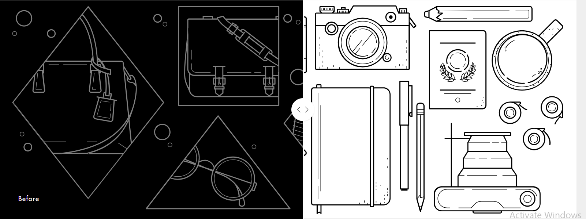

Get the Best Bridal makeup Artist and Services Available in Lucknow & Kanpur Today
You feel pretty when you look pretty, and a stellar makeup job can do a great deal in that. The Top Knot aims to do just that for you. Being the best makeup artist in Lucknow, we make you exude confidence and beauty on your special days. Whether you're going to a cousin's function or attending an extravagant Indian wedding, our bridal makeup artist in Lucknow helps you radiate beauty from inside and outside both.
Bridal Transformation
Classy and professional looks for a photo shoot, simple no-makeup makeup looks for a casual day out, full glam bridal makeup services in Lucknow, or just a hint of touch for a friend’s party, we’ve got your back. Smokey eyes are our thing but worry not, we won’t compromise on your pink theme look if you ever need one. We have equipped our facility with the best-in-class beauty equipment, whether the ever-loved airbrush makeup or international skincare makes your skin makeup ready.
Not just the skin care, even the makeup brands we use are of top quality. Some of the makeup brands we use are Lancome, Huda Beauty, Benefit Cosmetics, Bobbi Brown, and Estee Lauder, among many other international brands. Our makeup academy in Lucknow can also be customized per your wish and choice.
Our Makeup Artist
The professionals at The Top Knot are some of the best makeup artist in Kanpur. Our makeup artists get into the details of your outfit, occasion, and accompanying accessories. Only then we finalize a great look for your outing. And, if you want any changes in the look or you find something troublesome, the artists make sure to make changes as per the requests. For us, your happiness matters the most on your special days.